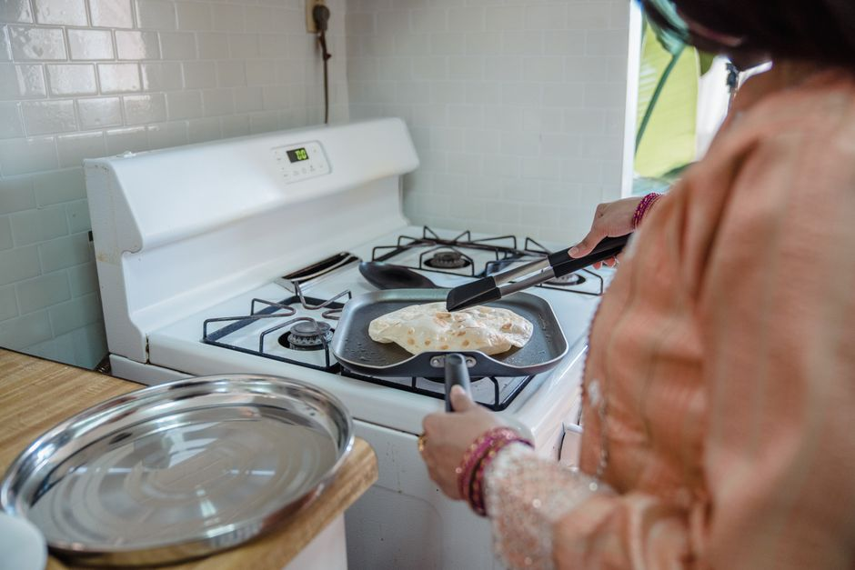

キッチン
野菜室で野菜がしなびない包み方と立てる向きのコツ
2026-11-13

野菜室に入れていても、いつの間にか野菜がしなびてしまうことはありませんか。温度管理だけでなく、包み方や置く向き、他の野菜との組み合わせ方を少し工夫するだけで、鮮度の持ちが変わってきます。今回は保存の具体的なコツを紹介します。
根菜・葉物は湿らせた新聞紙で包むのが基本
大根やにんじんなどの根菜類は、葉を根元から切り落として、湿らせた新聞紙に包んでからビニール袋などに入れ、冷暗所や野菜室で立てて保存するとよいとされています。ほうれん草や春菊、水菜、三つ葉といった葉野菜も同様に、湿らせた新聞紙で包んでから保存袋に入れ、野菜室で立てて置く方法が紹介されています。新聞紙は適度に湿気を保ちながら余分な水分を吸ってくれるため、乾燥と水分過多の両方を防ぐ役割があるようです。なお、新聞紙は使っているうちに湿ってくることがあるため、様子を見ながら交換することも大切だとされています。
白菜やキャベツは『立てて、育った向き』が長持ちの鍵
丸ごとの白菜を保存する場合は、新聞紙で包んだあと、根元を下にして立てて置くのが基本とされています。葉野菜は横に倒すと自身の重さで葉がつぶれやすくなるため、育っていたときと同じように立てて保存すると、形が保たれやすいようです。キャベツも同様に、畑で育っていたときに近い形、つまり芯を下にして野菜室に入れる方法が紹介されています。さらに、キャベツは芯の部分をくり抜いて濡らしたキッチンペーパーを詰め、湿らせた新聞紙で丸ごと包むと、2週間から1か月ほど日持ちする目安が示されています。使うときは中心から切るのではなく、外側の葉から1枚ずつはがして使うと、切り口が増えずに長持ちしやすいとされています。
きゅうりやにんじんはヘタ・穂先の向きを意識する
きゅうりやにんじんは、育っていたときにヘタの部分が上を向いていたことから、保存する際もヘタを上にして立てて置く方法が紹介されています。アスパラガスも同じ考え方で、穂先を上にして立てておくとよいとされています。これらの野菜は横に寝かせて保存すると、重力の向きが育っていたときと変わることで、栄養や水分の分布に偏りが出やすくなると考えられているようです。野菜室の空いたスペースに合わせて、保存容器やペットボトルホルダーなどを使って立てる向きを保ちやすくする工夫も紹介されています。
エチレンガスを出す野菜・果物は分けて保存する
りんごやバナナ、トマト、アボカド、メロンなどは、熟成を進める植物ホルモンである「エチレンガス」を放出することが知られています。一方で、きゅうりやレタス、ブロッコリーなどはこのエチレンガスの影響を受けやすく、近くに置いておくと傷みが早まる原因になるとされています。そのため、エチレンガスを出しやすい野菜・果物は、ポリ袋に入れて個別に包み、口をしっかり縛るか密閉できる保存容器に入れて、他の野菜と直接触れ合わないようにすることがポイントとして紹介されています。野菜室の中でも、何をどこに置くかという配置を少し意識するだけで、傷みの進み方に差が出るようです。
野菜室での保存は、温度だけでなく「包み方」「立てる向き」「他の野菜との距離」もポイントになります。今回紹介したコツを参考に、手持ちの野菜に合わせた保存方法を試してみてください。


読み込み中...